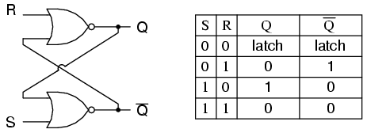
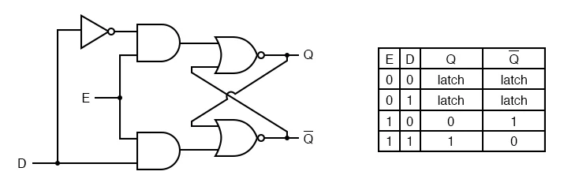
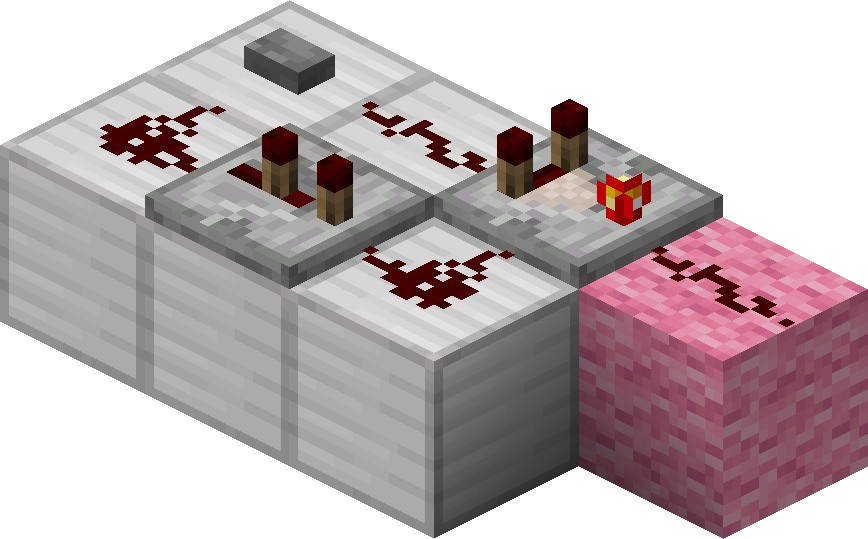
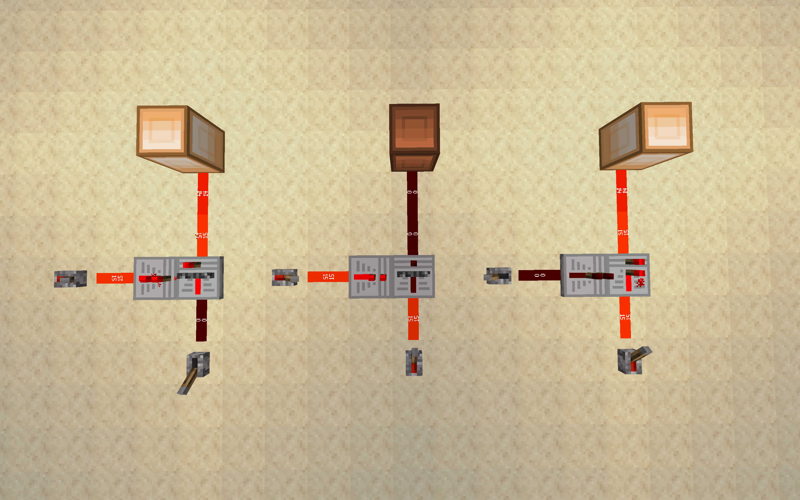

Latches and flip-flops are memory elements that store a single bit of data. They are crucial for building static random access memory (SRAM) and CPU registers.
All the designs that follow are extensions of this foundation — the building blocks of a register file.
The most basic type of latch. SR latches have two input signals: Set (S) and Reset (R). The output Q is the stored memory state, while Q' (Q complement) is the opposite.
Behavior:
Here’s a typical SR latch circuit and its truth table:
What if we wanted to control when the latch updates its memory? By adding two AND gates alongside the set and reset signals, we introduce an enable signal. This lets us choose when the latch updates:
A D latch simplifies the gated SR latch by combining the Set and Reset inputs into one data input (D). It prevents invalid states by ensuring S and R are always opposites internally.
This behavior makes the D-latch useful for temporary data storage in registers and memory elements.
Fun fact: every latch we’ve covered — SR, Gated SR, and D latches — has a NAND gate equivalent! Can you figure out how to build them? They behave similarly but use NAND gates instead of NOR gates.
Note: For this class, we won’t cover JK or T latches — but feel free to explore those on your own!
D Flip-Flops build on D latches by introducing a clock pulse, ensuring the output only updates on a rising or falling edge of the clock signal.
Let’s break this down:
D Flip-Flops are ideal for CPU registers because they only update precisely when the clock pulse triggers — ensuring reliable, synchronized data flow. The below is an example of a 2 tick pulse, that triggers when the button is pressed. We will talk more about pulses and clocks in the program counters section of this textbook.
The beauty of Minecraft is that they gave us a mechanism for storing memory. Although there are many different practices, we primarily rely on the data-latch or d-latch. A d-latch is a simple way to hold data in place. You can construct one with two repeaters, where one repeater "locks" the other one. When the repeater lock is established, any input data will not affect what is stored in memory. When the repeater lock is released, the data slot can be updated at will. You can think of this as choosing when or when to not hit save on a file.
Here is an example of a d-latch in three different setups. Try it yourself.
